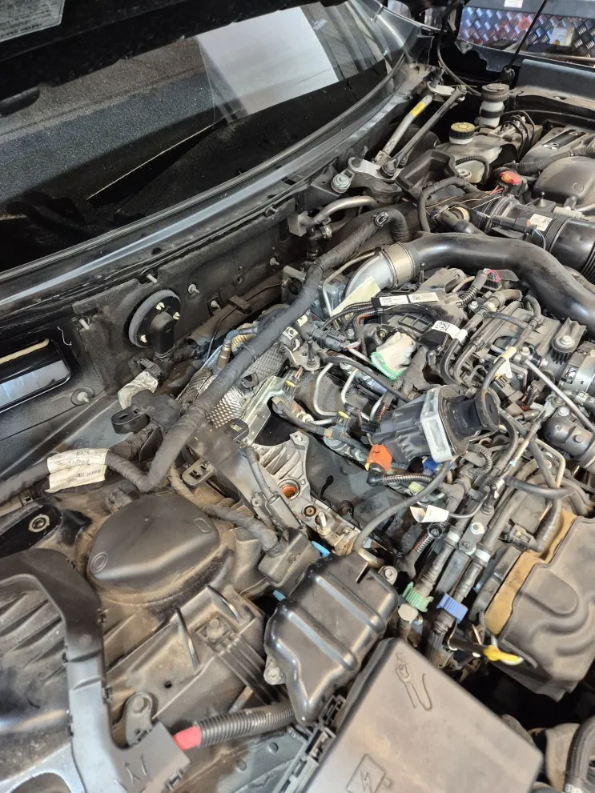
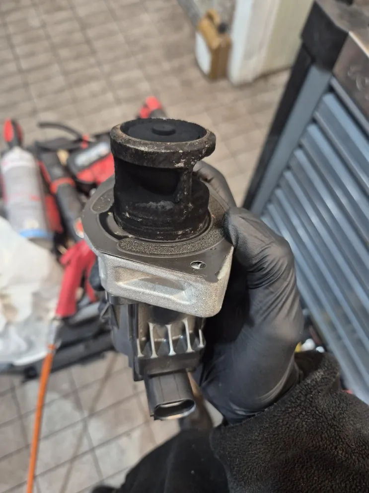
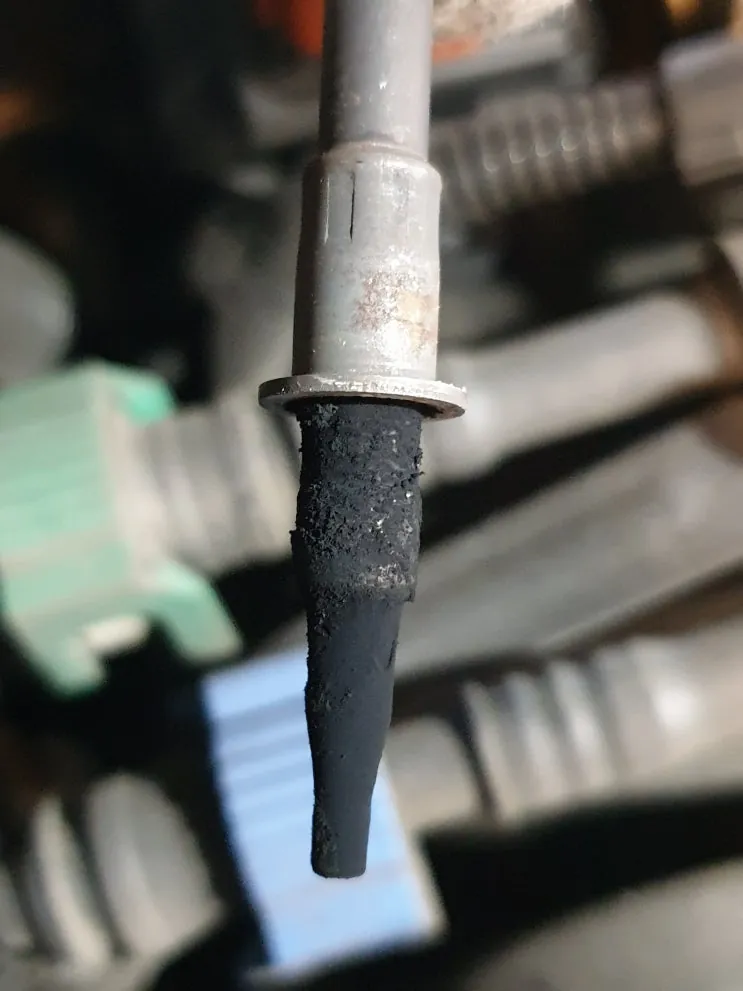
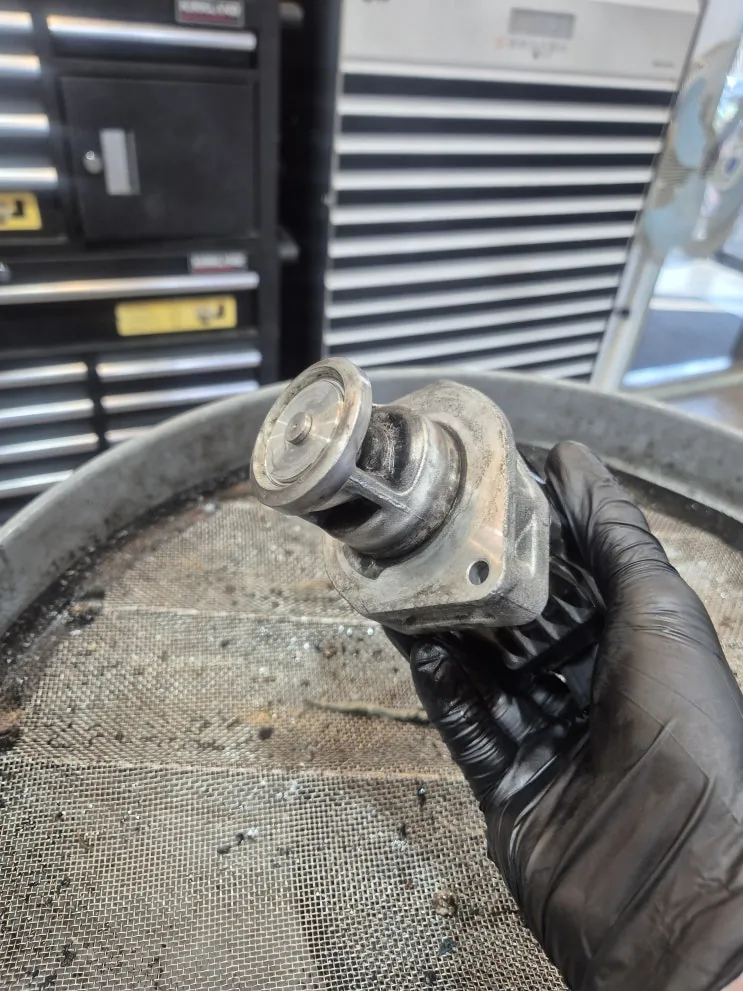
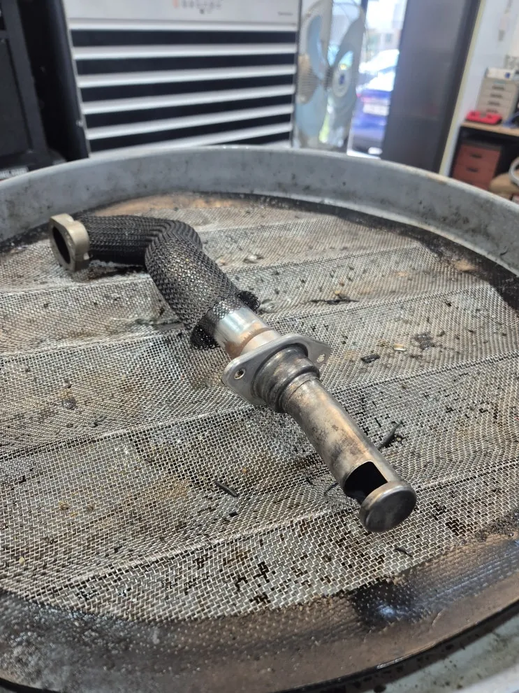
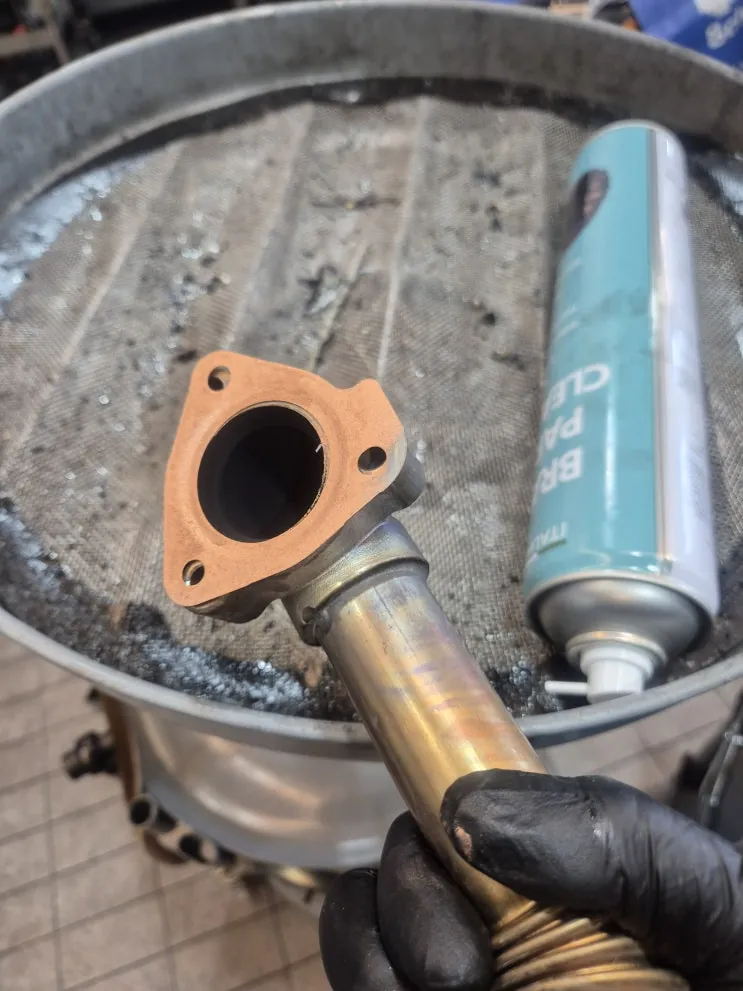
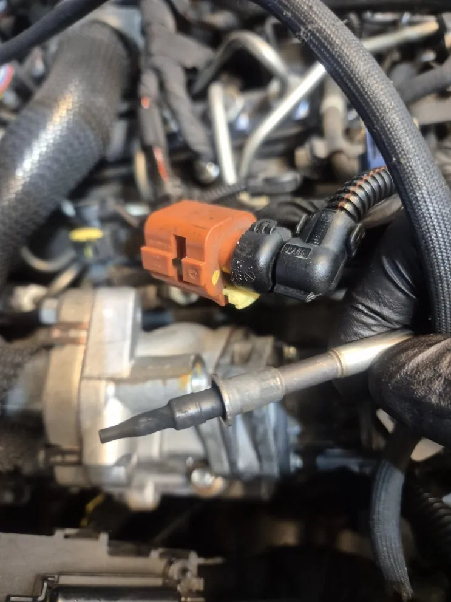

기블리 경고등·출력 저하 — EGR 밸브 카본 막힘 확인과 세척
At a glance한눈에 보기
- 차량
- 마세라티 기블리
- 증상
- 경고등 점등, 출력 저하, 가속 지연
- 진단
- 기블리(M157)의 경고등, 출력 저하, 가속 지연은 EGR 밸브에 카본이 쌓여 막힌 것이 원인이었습니다. EGR 밸브뿐 아니라 인테이크 파이프와 바이패스 라인까지 함께 세척하고, 시운전으로 경고등이 다시 켜지지 않는지 확인했습니다.
- 작업
- EGR 밸브 점검
- EGR 밸브 세척
- 인테이크 파이프 세척
- 바이패스 라인 세척
- 시운전

입고 증상
경고등이 켜지고 출력이 떨어지며 가속이 늦게 붙는다는 증상으로 기블리(M157)가 입고됐습니다. 점검 결과 증상의 원인은 EGR 밸브 막힘이었습니다.


원인 — EGR 밸브와 카본
EGR(배기가스 재순환) 밸브는 배기가스 일부를 흡기로 돌려 연소 온도를 낮추고 질소산화물(NOx)을 줄이는 디젤 엔진 부품입니다. 시간이 지나면 밸브와 바이패스 라인 안쪽에 카본과 오일 찌꺼기가 쌓입니다.
카본이 쌓이면 들어가는 공기량이 줄고 연료 혼합비가 틀어져 출력과 연비가 떨어지고, 엔진 경고등이 켜질 수 있습니다. 이번 차량도 부품 모양이 잘 보이지 않을 만큼 카본이 쌓여 있었습니다.


작업 — 흡기 경로 전체 세척
EGR 밸브만이 아니라 인테이크 파이프와 바이패스 라인 등 카본이 쌓인 부품을 모두 세척했습니다. 주변 부품에 카본이 많은 상태에서 밸브만 닦으면 공기 흐름이 그대로 막혀 있어 증상이 나아지지 않습니다.
떼어 낸 부품은 하나씩 세척해 카본을 걷어 낸 뒤 다시 장착했습니다.


출고 점검
세척 후 시운전을 충분히 하면서 경고등이 다시 켜지지 않는 것을 확인하고 출고했습니다.
기블리 디젤에서 출력이 떨어지거나 시동이 불안정하고 연비가 갑자기 나빠졌다면 EGR 계통 점검을 먼저 받아 보시길 권합니다. 경기도 파주에 있지만 전국 탁송으로도 맡기실 수 있습니다. 계기판 경고등 사진을 카톡으로 먼저 보내 주세요.

자주 묻는 질문
기블리 EGR 밸브만 세척하면 출력이 돌아오나요?
인테이크 파이프와 바이패스 라인에도 카본이 많이 쌓여 있으면 밸브만 세척해서는 나아지지 않습니다. 카본이 쌓인 흡기 경로를 함께 세척해야 합니다.
이 작업의 원문 기록: 네이버 블로그에서 보기
Consultation
마세라티 기블리, 비슷한 증상이 있나요?
증상 사진이나 경고등 화면을 카톡으로 먼저 보내 주시면 확인 후 안내해 드립니다. 전국 탁송 상담 가능.